2017/0923Sat10時にかけて
ハッピーバースデー
無事、19歳になりました✨
showroomはゲリラで
20分程やらせて頂きました
また、今度この事については話します!
小学生の頃は
自分が中学生になる事すら
想像できなかったのですが
こうやって19歳を迎えられました
まだ、やりたい事叶えたい事小さなことから大きなことまでやりたい事沢山あります✨
19歳
毎年同じようなことを思うのですが
年齢でなく
人間として好きだと言っていただけるような人でありたいです！
家族に、感謝
お仕事で関わってくださっている方々に、感謝
ファンの皆さんの応援のお陰で日々頑張れてます、感謝
自分みたいな変人
誰からも相手にされないだろうっと
幼稚園の頃から何処か冷めていた私でした
だから誤解されやすい性格で悩むことも日常的にありました。
そんな私が
乃木坂46に関わらなかったらこんなに沢山の方に「おめでとう」なんて言われなかっただろうなー
おめでとうと言われると
ニヤニヤしてしまう
素直に嬉しいです✨
悩むことも
つまずくことも
嬉しいことも
生きていれば
誰しもあると思いますが
私のモチベーションは
いつも近くで応援してくれる皆さんが
ブログのコメントだったり
握手会では
直接話してくれたり
ライブでは大きな声援をしてくれたり
グッズでパワーを送ってくれたり
それが今の1番の支えです。
だから進もうと思えます。
普段言わないけどそんな皆さんが私は
大好きです
お誕生日を迎えて
いつもより多くの声を聞き
改めて自分の強みを皆さんが印してくれた気がします(..)
理想を追い求め
夢を現実にできる人ってどのくらい居たのかなとよく考えます
映画でよく
俺は夢を諦めたと
夢みる主人公に語りかけるシーンを見る気がします
それがフィクションでも
その人の分まで
弱い自分が日々歩み
多くの人に感動や喜び
感情を動かしたい
同じような葛藤を抱えてる人が居れば支えになりたい。
不可能な事なんてなかったんだよって。
これが私の
人生の目的です✨
ネガティブな私なので
何書いても
ネガティブに思われるんじゃないかとか
よく、言葉に魂宿り過ぎと
周りの人に言われるのですが
自分ではそんなつもり無くて、、、(´`;)
ブログを書いていて
言いたいこと上手く伝えるの難しいと考えては消し考えては消しを繰り返していたのですが
今までの文、凄くザックリまとめると
努力
感謝
笑顔
この3つ凄いなとふと思いました、、、(´`;)
意地っ張りなのに
心は自分でもビックリするくらい脆いところは幼い頃から変わっていません
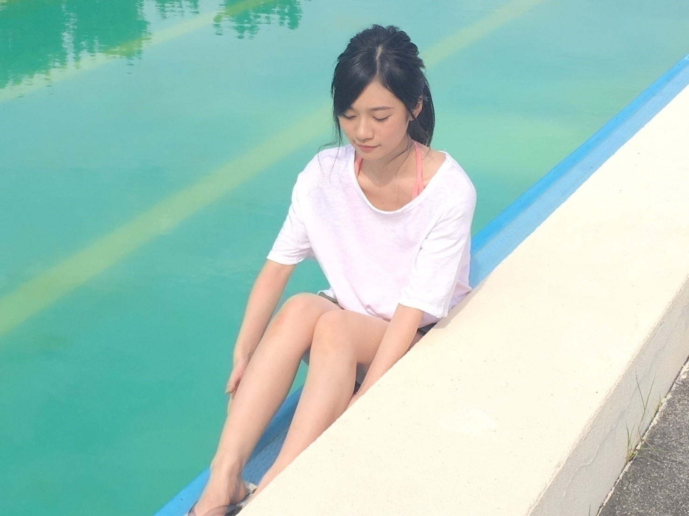
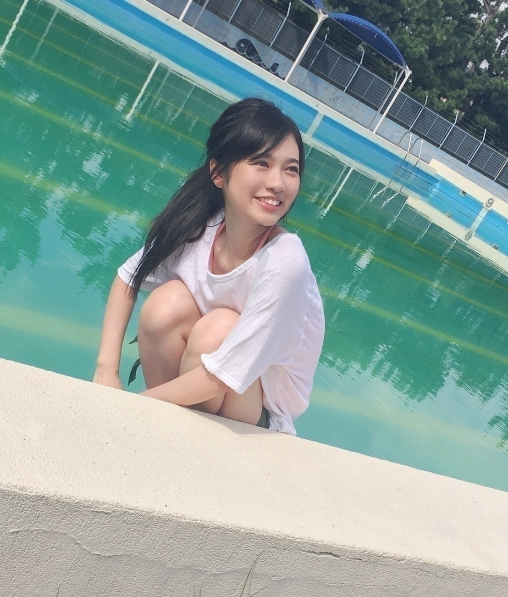
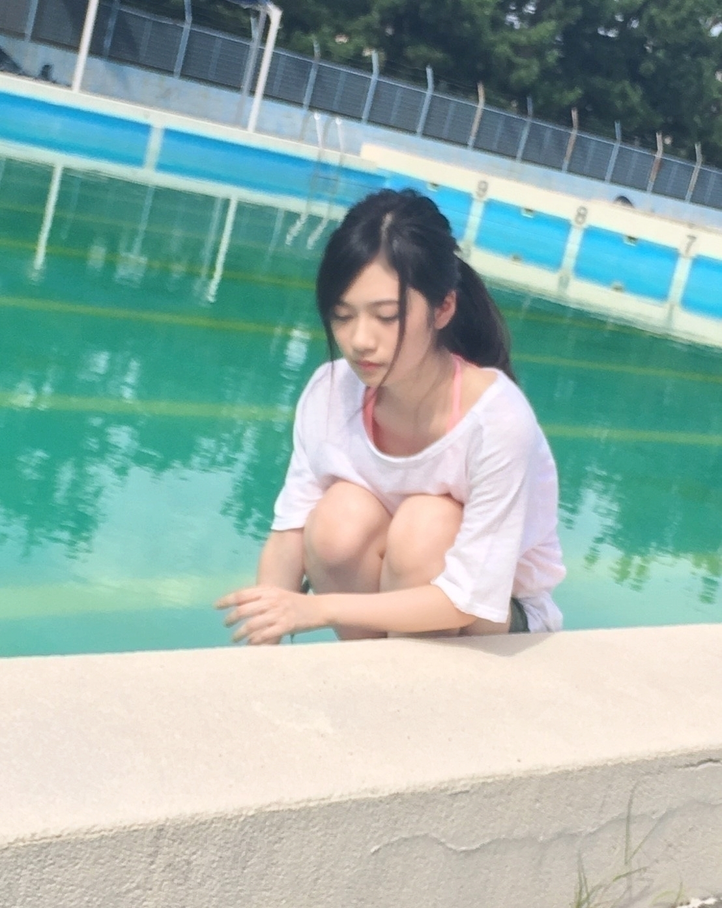
ビビリですが、自分で決めた事は貫き通したくて
何事にも素直過ぎるわたしですが(´`;)
19歳の私もどうぞ
宜しくお願い致します✨
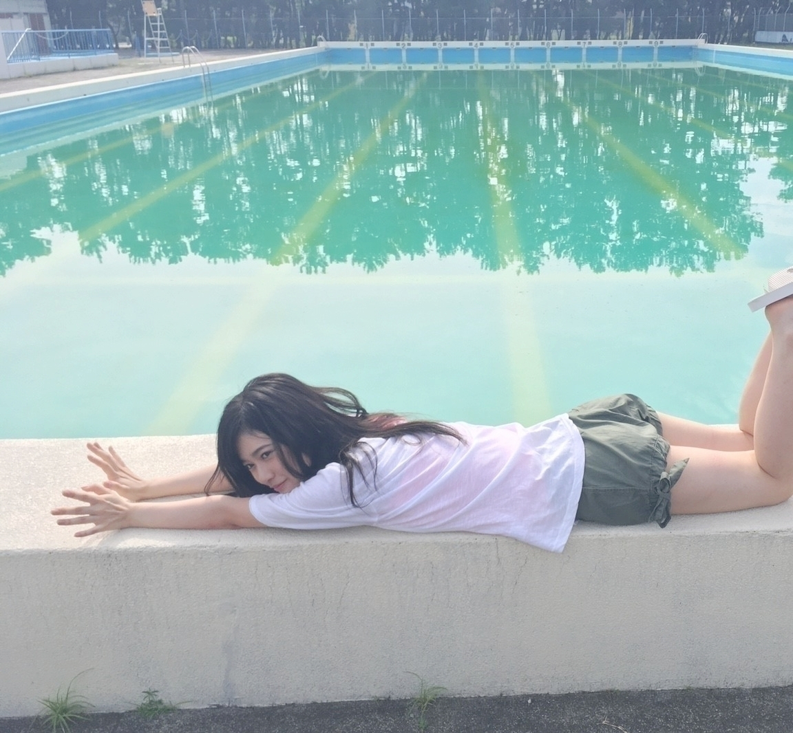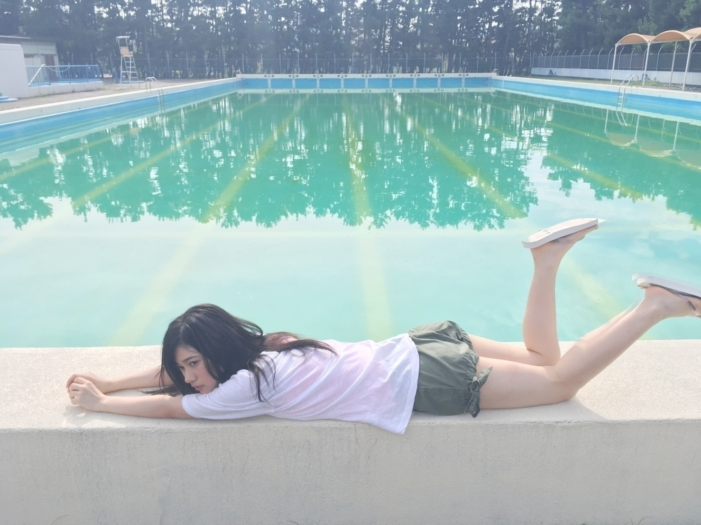
2017-09-23
乃木坂46 寺田蘭世
2017/09/23 22:30｜個別ページ｜コメント(1734)
2017/0922Fri左肩
握手会でもうそろそろお誕生日だねと言われ
あ、もう9月後半なのかと
日付感覚がなく、
気付けば無事明日を迎えられればお誕生日、
今年は実感なくお誕生日を迎えそうです
寺田蘭世です(..)
個別握手会
ありがとうございました
また、画像も合わせて
後日書きますね✴
この日は
Mステもありました
バタバタした1日でしたが
改めて自分はお仕事が好きだし
乗り越えると
自信にも繋がるし
良きかなー
そんな1日でした
本当に本当に本当に
ありがとうございました✴
あ、そう言えば
りりあちゃんに似合いそうだなーって思ったお洋服私のお下りなんですが
個別握手会で着てくれて嬉しかったよー
ブログにも書いてくれて
ありがとね✴
発売中のEX大衆さんー
さゆりんご軍団連載ページ
+EX大衆さんソログラビアの方でも出させて頂きます
チェキもさゆりんご軍団ver
グラビアverあるので良かったら応募してみて下さい
宜しくお願い致しますo(^o^)o
今回のソログラビアは
スタッフさんが凄く色々とテーマを考えて下さったらしく
イメージはあの映画
打上げ花火、下から見るか?横から見るか?をインスピレーションしたものだそうです、
プールで色んな撮影をしました
撮影当日はとても暑い日で
プール見たら凄く浸かりたい気持ちになりました
一応、
クロール
平泳ぎ
背泳ぎは出来ます
犬かきは出来ません。
プールで撮影したり
浴衣を着て本当のお祭に参加したり
海に行ったり
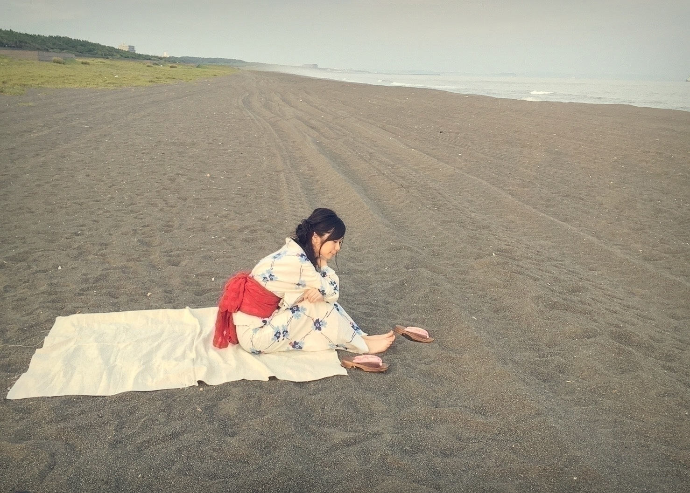
夏の楽しさと
夏が終わる瞬間の儚さー
とても充実感のある撮影でしたー
オフショットいっぱいあるので今回は浴衣の方を
一瞬だけお祭りに行けました
乃木坂46に加入してから
お祭りとか参加した事なかったから短い時間でしたが
とても楽しかったです✴
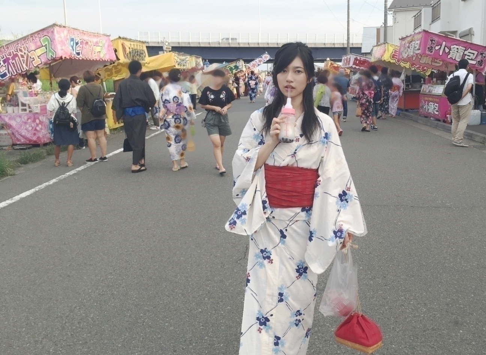
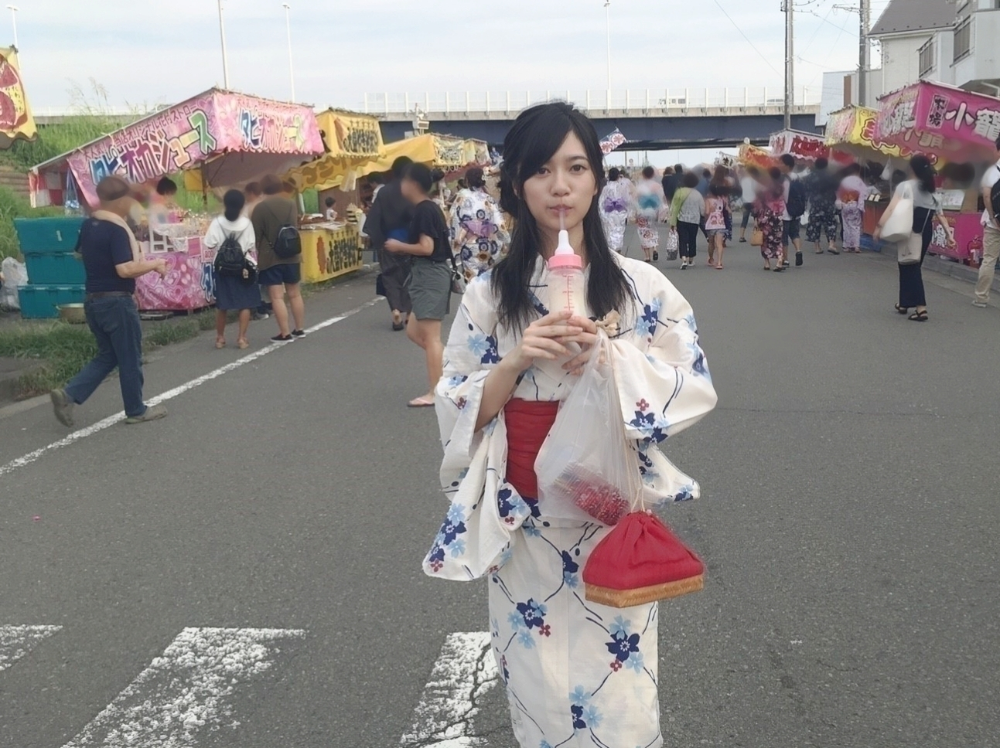
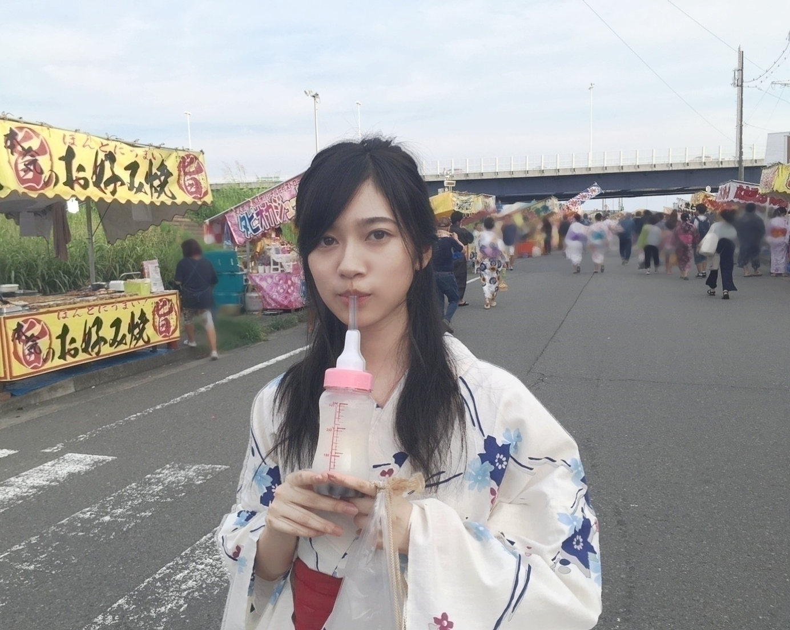
前のブログとの
画像のジャンルの違い(..)
（知らない方は前回のブログも読んで下さい）
色んな面の私を知ってもらえると嬉しいです✴
2017/0916SatМоя улыбка ?
おはようございます
こんにちは
こんばんはー
全国握手会ありがとうございました✴
予想以上に沢山の方に会えてビックリと嬉しさでいっぱいでしたo(^o^)o
（画像はゆうりさんの、ブログに載ってます）
ペアはゆうりさんとでした
ゆうりさんは本当に明るくて元気いっぱいの握手でした
私自身は落ち着いてるけど
自分がイチアイドルファンで乃木坂46の握手会に参加してたらゆうりさんの握手は私は凄く好きだなーってお隣で見てて思いました
ほっこり
個別握手会でも
割とレーンがお近所さんの
ゆうりさんo(^o^)o
ゆうりさんファンの皆様
1日ありがとうございました
そして、いつも来てくれる皆様に心からありがとうございます。
新しいグッズの
チケットフォルダー
今年の生誕Tシャツ
あだ名マフラータオル
3点ともオレンジぽい色合いに統一制があって良きでしたー✴
ここからは
次のシングルへの話です✴
逃げ水の選抜発表を受けて率直に思ったことは
次のシングルが大事だなっという気持ちでいっぱいでした
新潟も残ってはいますが
夏のツアーを通して前シングルの感想、
1番変化があったのは
与田ちゃん、ももこが
選ばれた事ですかね？！
私が思ったことは
''大事な場所乃木坂46という場所をこれからも永く愛されるもの
1秒でも1年でも
長く愛される存在にしたい''
未来に繋ぎたい
いつもそれも考えながら活動しているので
私はそれらに貢献できるのであればいいなと考えていました(..)
今回19枚目シングルは
映画
舞台
あさひなぐの主題歌と言う事で
今までとは全然違う気持ちです。
だだ言えるとしたら
人生にはタイミング的なものや運、何か引きつける事も大事なのかなと思いました。
勿論、自分らしい努力をした上でだとは思ってますが
ここに至るまで
自分には出来ないだろうなと苦戦したものも
それらを超えた楽しさ嬉しさをしっかりと1つ1つ
経験してきたからこそ
今回はいつもみたいな
悔しさみたいなものは良い意味でないです！
そして18枚目で気づかされたことは
今までは自分を攻め過ぎていたと
それは今年の全国ツアーで周りでいつも見てくれてる方達が教えてくれました。
自分で私頑張ってると言うのは私の性格上あまり口にすることはありませんでした。
自分を奮い立たせる為に
いつも強く強くと言い聞かせてるけど
本当の私はそんなに
強い子ではありません、
だからとてもじゃないけど
自分を褒めることが出来ないし言えなくて
自分の何もかもが好きでなく今回の夏のツアーでも
沢山自分と葛藤していました。
今までずっと1人で
悩んで抱え込んでしまっていました。
ですが、近くでいつも見てくれてる方に
貴方は頑張ってる
そう言っていただけると
自分を認めてあげることも大切な感情だと学びました。
寧ろ、謙遜し過ぎるのは
評価してくださる方達に
対して失礼な事なのかもしれないと。
私が弱ってたり
泣いても
今までの道のりがあるから本当に辛いときは
支えてくれる人
沢山いてくれてたんだって
短かったけど新しい気持ちを18枚目期間で得られました。
いつかも
握手会でファンの方に掛けられた言葉で
どこに居ても
何もしてても蘭世が生きてる限り応援するって
生きてる限りと言うところが何だか自分の思想に似た人が寄ってくる
類は友を呼ぶを実感しました(..)
そんな皆さんが愛おしい(..)
正解なんてものは
どんなものにもない
だから、生きるって難しいです。
ですが、本当にここまで
自分の等身大を皆さんに見せることができて良かった。
見ててくれてありがとうございます。
その事実が
何より嬉しいです。
これからも宜しくお願い致します。
これから一緒に歩みたいって方と少しでも思ってくださった方
出会いに遅い早いはないと思っています
お互いの気持ちが大事です(..)
日々を大切に
日々ありがとうを忘れずに
ですよー✴
もう、そろそろ20枚目という節目
鮮明には覚えてますが
10枚目が遠い昔の様ですね
目の前の喜びより
近い未来にこれでよかったと思えるように
19枚目は活動したいなーって思ってます!
18枚目
19枚目の私は元気に目の前のものを楽しみたい！
いつも真面目になり過ぎるブログですが
最近、ブログ楽しいなって今更ながら思うようになりました(´`;)
少し前までこのブログ上げて良いのだろうかって悩み
これでいいかなーって
何回も近くに居る人に相談してから上げてたくらい
ビビリで心配症ですが、
ブログを更新する度
コメントで
沢山のありがとうを見ると
こちらこそありがとう
いい気持になります
ありがとうございます✴
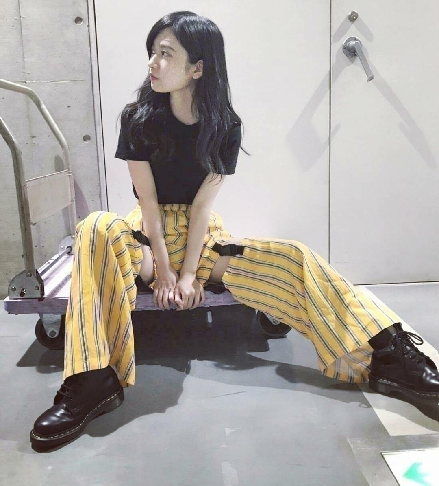
つい最近18枚目の制作をして
ツアー真っ最中かと思えば
あっという間に
夏が終わりましたね
お天気も
暑くなってり寒くなったり
明日からは各地大雨と予報されているそうですが、
バタバタと
めまぐるしく毎日ですが
体調にはお気をつけて(..)
健康第一
身がなきゃね(..)
Mステウルトラフェス
イベント会
個別握手会
EX大衆発売中です、
また、ブログすぐ書かなきゃ(..)！
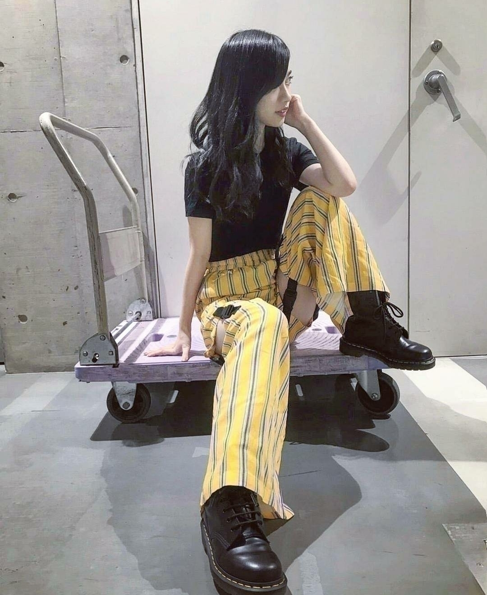
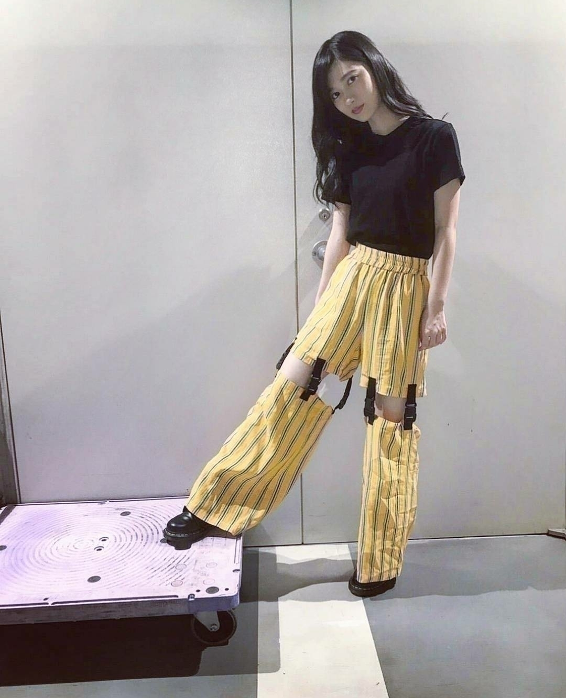
私服
2017/0903SunUP
ゴミクズワタボコリー
アルバムのユニット曲で
ワタボコリという楽曲の
私の歌割り
'ゴミクズワタボコリ'を題名にしましたo(^o^)o
レーコーディングのとき
'ワタボコリ'はフォークソングで歌詞がとても深く、
赤いバンダナ頭に巻いて
ギター片手に
1人格好良く歌ってそうな方をイメージして歌いました、、、
よかったらフルで
'ワタボコリ'聴いてください✴
特に10代同世代とか
考えたい夜とかに聴いてほしいなって思ってます(..)
ちなみに
泣いたっていいじゃないかが今作で一番歌詞が好きですo(^o^)o
「歯を食いしばって我慢してるけどたまには泣いたっていいじゃないか」
これであの明るいテンポ感
それと何より高校生クイズが大好きな高山さんセンターって言うのも嬉しい✴
私も今年の高校生クイズ観ました
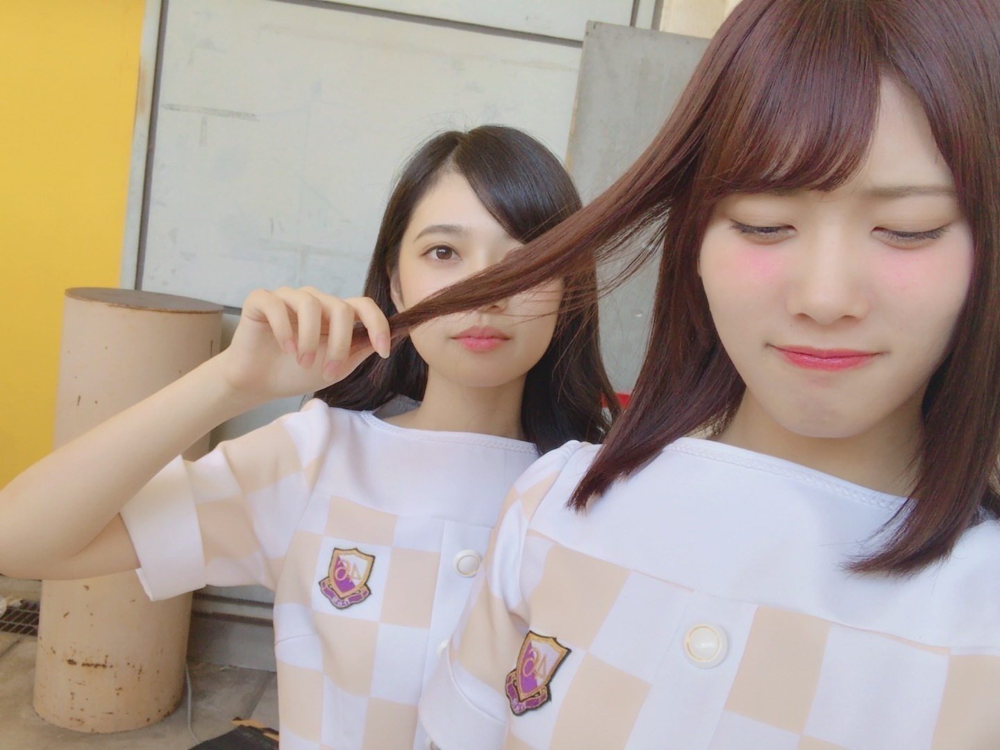
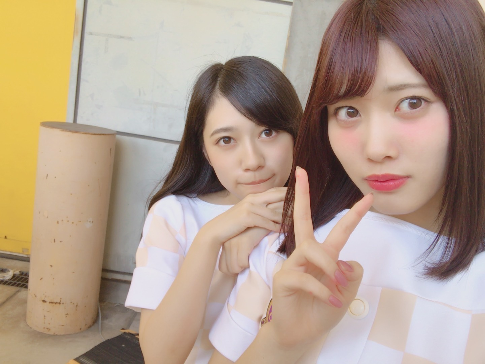名古屋全国握手会
ありがとうございました
ライブでファンの皆さんとは会ってたけど
握手会がお久しぶりな感じもしました
ペアは伊藤純奈
じゅんなでしたo(^o^)o
じゅんな大好きだなーって
改めて思った
はじめましてだった方も
いつも来てくださる方も
良かったらまたいつかお会いしたいです✴
来週も幕張メッセで
全国握手会があります
宜しくお願い致します(..)
それと全国握手会恒例になりましたポスター交換
逃げ水のジャケ写は色合いがポップで個人的に好きです✴
皆さんは
手に入れられましたか？
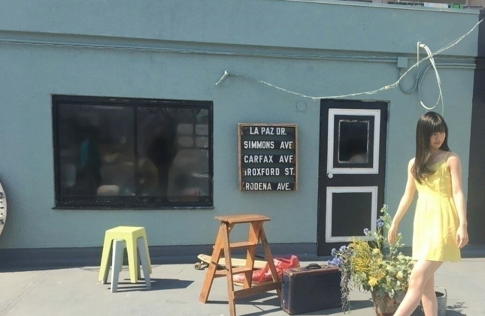
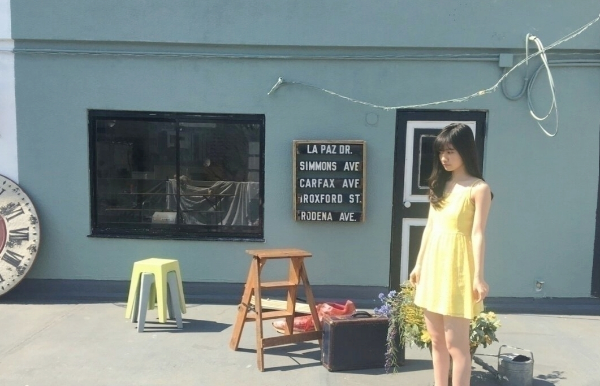
LaLa RANZE...
映画みたいな
あさひなぐもうそろそろ公開ですね
好きな映画は
ナイトミュージアム(..)
劇中歌が好きなのと沢山笑えて非現実的だから好き
初めて泣いた映画は
タイタニック
2017/09/03 17:45｜個別ページ｜コメント(1013)